Lecciones de circuitos eléctricos - Volumen II
Capítulo 5
REACTANCIA E IMPEDANCIA - R, L Y C
- Review of R, X, and Z
- Series R, L, and C
- Parallel R, L, and C
- Series-parallel R, L, and C
- Susceptance and Admittance
- Summary
- Contributors
Review of R, X, and Z
Antes de comenzar a explorar los efectos de resistencias, inductores y condensadores conectados entre sí en los mismos circuitos de CA, repasemos brevemente algunos términos y hechos básicos.
Resistenciaes esencialmentefriccióncontra el movimiento de los electrones. Está presente en todos los conductores hasta cierto punto (exceptosúperconductores!), sobre todo en resistencias. Cuando la corriente alterna pasa por una resistencia, se produce una caída de voltaje que está en fase con la corriente. La resistencia está simbolizada matemáticamente por la letra "R" y se mide en la unidad de ohmios (Ω).
Resistencia reactivaes esencialmenteinerciacontra el movimiento de los electrones. Está presente en cualquier lugar donde se desarrollen campos eléctricos o magnéticos en proporción al voltaje o corriente aplicados, respectivamente; pero sobre todo en condensadores e inductores. Cuando la corriente alterna pasa por una reactancia pura, se produce una caída de voltaje de 90odesfasado con la corriente. La reactancia está simbolizada matemáticamente por la letra "X" y se mide en la unidad de ohmios (Ω).
Impedanciaes una expresión integral de todas y cada una de las formas de oposición al flujo de electrones, incluidas tanto la resistencia como la reactancia. Está presente en todos los circuitos y en todos los componentes. Cuando la corriente alterna pasa por una impedancia, se produce una caída de voltaje que oscila entre 0oy 90odesfasado con la corriente. La impedancia está simbolizada matemáticamente por la letra “Z” y se mide en la unidad de ohmios (Ω), en forma compleja.
Resistencias perfectas (Figura below) poseen resistencia, pero no reactancia.Inductores perfectos y condensadores perfectos (Figura below) poseen reactancia pero no resistencia. Todos los componentes poseen impedancia y, debido a esta cualidad universal, tiene sentido traducir todos los valores de los componentes (resistencia, inductancia, capacitancia) en términos comunes de impedancia como primer paso en el análisis de un circuito de CA.
{kind=link}
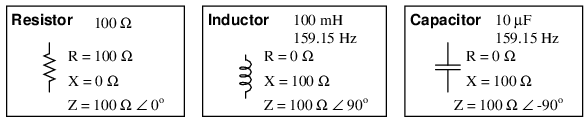
Resistencia, inductor y condensador perfectos.
El ángulo de fase de impedancia para cualquier componente es el cambio de fase entre el voltaje a través de ese componente y la corriente a través de ese componente. Para una resistencia perfecta, la caída de voltaje y la corriente sonsiempreestán en fase entre sí, por lo que se dice que el ángulo de impedancia de una resistencia es 0o. Para un inductor perfecto, la caída de voltaje siempre adelanta a la corriente en 90o, por lo que se dice que el ángulo de fase de impedancia de un inductor es +90o. Para un condensador perfecto, la caída de voltaje siempre retrasa la corriente en 90o, por lo que se dice que el ángulo de fase de impedancia de un capacitor es -90o.
Las impedancias en CA se comportan de manera análoga a las resistencias en los circuitos de CC: se suman en serie y disminuyen en paralelo. Una versión revisada de la Ley de Ohm, basada en la impedancia en lugar de la resistencia, se ve así:

Las leyes de Kirchhoff y todos los métodos y teoremas de análisis de redes también son válidos para los circuitos de CA, siempre que las cantidades se representen en forma compleja y no escalar. Si bien esta equivalencia calificada puede ser un desafío aritmético, es conceptualmente simple y elegante. La única diferencia real entre los cálculos de circuitos de CC y CA es con respecto afuerza. Debido a que la reactancia no disipa potencia como lo hace la resistencia, el concepto de potencia en los circuitos de CA es radicalmente diferente al de los circuitos de CC. ¡Más sobre este tema en un capítulo posterior!
Series R, L, and C
Tomemos el siguiente circuito de ejemplo y analicémoslo: (Figura below)
{kind=link}
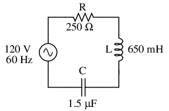
Ejemplo de circuito serie R, L y C.
El primer paso es determinar las reactancias (en ohmios) del inductor y el condensador.
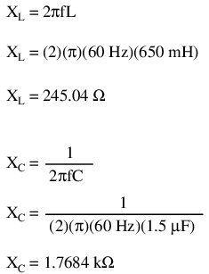
El siguiente paso es expresar todas las resistencias y reactancias en una forma matemática común: impedancia. (Cifra below) Recuerde que una reactancia inductiva se traduce en una impedancia imaginaria positiva (o una impedancia a +90o), mientras que una reactancia capacitiva se traduce en una impedancia imaginaria negativa (impedancia a -90o). La resistencia, por supuesto, todavía se considera una impedancia puramente "real" (ángulo polar de 0o):
{kind=link}
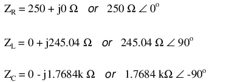
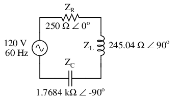
Ejemplo de circuito de las series R, L y C con valores de componentes reemplazados por impedancias.
Ahora bien, con todas las cantidades de oposición a la corriente eléctrica expresadas en un formato de número complejo común (como impedancias y no como resistencias o reactancias), se pueden manejar de la misma manera que las resistencias simples en un circuito de CC. Este es un momento ideal para elaborar una tabla de análisis para este circuito e insertar todas las cifras “dadas” (voltaje total e impedancias de la resistencia, inductor y capacitor).
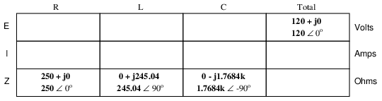
A menos que se especifique lo contrario, el voltaje de la fuente será nuestra referencia para el cambio de fase y, por lo tanto, se escribirá en un ángulo de 0.o. Recuerde que no existe un ángulo de cambio de fase “absoluto” para un voltaje o una corriente, ya que siempre es una cantidad relativa a otra forma de onda. Sin embargo, los ángulos de fase de la impedancia (como los de la resistencia, el inductor y el capacitor) se conocen de manera absoluta, porque las relaciones de fase entre el voltaje y la corriente en cada componente están absolutamente definidas.
Tenga en cuenta que estoy asumiendo un inductor y un condensador perfectamente reactivos, con ángulos de fase de impedancia de exactamente +90 y -90.o, respectivamente. Aunque los componentes reales no serán perfectos en este sentido, deberían ser bastante parecidos. Para simplificar, a partir de ahora asumiré inductores y condensadores perfectamente reactivos en mis cálculos de ejemplo, excepto que se indique lo contrario.
Dado que el circuito del ejemplo anterior es un circuito en serie, sabemos que la impedancia total del circuito es igual a la suma de los individuos, entonces:
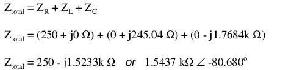
Insertando esta cifra para la impedancia total en nuestra tabla:
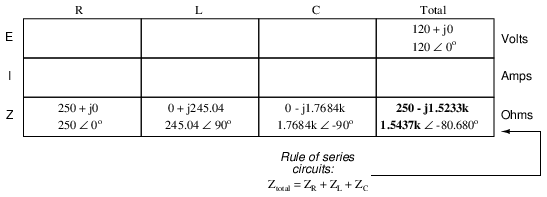
Ahora podemos aplicar la Ley de Ohm (I=E/R) verticalmente en la columna "Total" para encontrar la corriente total para este circuito en serie:
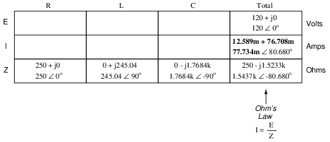
Al ser un circuito en serie, la corriente debe ser igual en todos los componentes. Así, podemos tomar la cifra obtenida para la corriente total y distribuirla a cada una de las otras columnas:
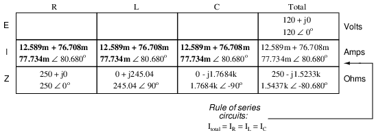
Ahora estamos preparados para aplicar la Ley de Ohm (E=IZ) a cada una de las columnas de componentes individuales en la tabla, para determinar las caídas de voltaje:
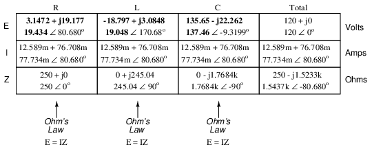
Observe algo extraño aquí: aunque nuestro voltaje de suministro es de solo 120 voltios, ¡el voltaje a través del capacitor es de 137,46 voltios! ¿Cómo puede ser esto? La respuesta está en la interacción entre las reactancias inductiva y capacitiva. Expresado como impedancias, podemos ver que el inductor se opone a la corriente de una manera exactamente opuesta a la del capacitor. Expresada en forma rectangular, la impedancia del inductor tiene un término imaginario positivo y el condensador tiene un término imaginario negativo. Cuando estas dos impedancias contrarias se suman (en serie), ¡tienden a cancelarse entre sí! Aunque todavía estánsumadospara producir una suma, esa suma es en realidadmenosque cualquiera de las impedancias individuales (capacitivas o inductivas) solas. Es análogo a sumar un número positivo y uno negativo (escalar): la suma es una cantidad menor que el valor absoluto individual de cualquiera de ellos.
Si la impedancia total en un circuito en serie con elementos inductivos y capacitivos es menor que la impedancia de cada elemento por separado, entonces la corriente total en ese circuito debe sermayor queque lo que sería con sólo los elementos inductivos o sólo los capacitivos allí. ¡Con esta corriente anormalmente alta a través de cada uno de los componentes, se pueden obtener voltajes mayores que el voltaje de la fuente en algunos de los componentes individuales! En el próximo capítulo se explorarán más consecuencias de las reactancias opuestas de inductores y condensadores en el mismo circuito.
Una vez que haya dominado la técnica de reducir todos los valores de los componentes a impedancias (Z), analizar cualquier circuito de CA es tan difícil como analizar cualquier circuito de CC, excepto que las cantidades tratadas son vectoriales en lugar de escalares. Con la excepción de las ecuaciones que tratan de la potencia (P), las ecuaciones en los circuitos de CA son las mismas que las de los circuitos de CC, utilizando impedancias (Z) en lugar de resistencias (R). La Ley de Ohm (E=IZ) sigue siendo válida, al igual que las Leyes de Voltaje y Corriente de Kirchhoff.
Para demostrar la ley de voltaje de Kirchhoff en un circuito de CA, podemos observar las respuestas que obtuvimos para las caídas de voltaje de los componentes en el último circuito. KVL nos dice que la suma algebraica de las caídas de voltaje a través de la resistencia, el inductor y el capacitor debe ser igual al voltaje aplicado desde la fuente. Aunque esto puede no parecer cierto a primera vista, un poco de suma de números complejos demuestra lo contrario:
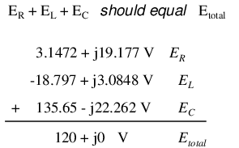
Aparte de un pequeño error de redondeo, la suma de estas caídas de voltaje equivale a 120 voltios. Realizado en una calculadora (conservando todos los dígitos), la respuesta que recibirá debe serexactamente 120 + j0 volts.
También podemos usar SPICE para verificar nuestras cifras para este circuito: (Figura below)
{kind=link}
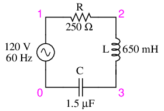
Ejemplo de circuito SPICE de las series R, L y C.
ac r-l-c circuit v1 1 0 ac 120 sin r1 1 2 250 l1 2 3 650m c1 3 0 1.5u .ac lin 1 60 60 .print ac v(1,2) v(2,3) v(3,0) i(v1) .print ac vp(1,2) vp(2,3) vp(3,0) ip(v1) .end
freq v(1,2) v(2,3) v(3) i(v1) 6.000E+01 1.943E+01 1.905E+01 1.375E+02 7.773E-02 freq vp(1,2) vp(2,3) vp(3) ip(v1) 6.000E+01 8.068E+01 1.707E+02 -9.320E+00 -9.932E+01
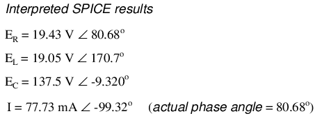
La simulación SPICE muestra que nuestros resultados calculados manualmente son precisos.
Como puede ver, hay poca diferencia entre el análisis de circuitos de CA y el análisis de circuitos de CC, excepto que todas las cantidades de voltaje, corriente y resistencia (en realidad,impedancia) debe manejarse en forma compleja en lugar de escalar para tener en cuenta el ángulo de fase. Esto es bueno, ya que significa que todo lo que has aprendido sobre los circuitos eléctricos de CC se aplica a lo que estás aprendiendo aquí. La única excepción a esta coherencia es el cálculo del poder, que es tan singular que merece un capítulo dedicado únicamente a ese tema.
- REVISAR:
- Impedancias de cualquier tipo se suman en serie: ZTotal = Z1 + Z2+ . . . zn
- Aunque las impedancias se suman en serie, la impedancia total de un circuito que contiene inductancia y capacitancia puede ser menor que una o más de las impedancias individuales, porque las impedancias inductivas y capacitivas en serie tienden a cancelarse entre sí. ¡Esto puede provocar caídas de tensión en los componentes que superen la tensión de alimentación!
- Todas las reglas y leyes de los circuitos de CC se aplican a los circuitos de CA, siempre que los valores se expresen en forma compleja en lugar de escalar. La única excepción a este principio es el cálculo defuerza, que es muy diferente para AC.
Parallel R, L, and C
Podemos tomar los mismos componentes del circuito en serie y reorganizarlos en una configuración en paralelo para obtener un circuito de ejemplo sencillo: (Figura below)
{kind=link}
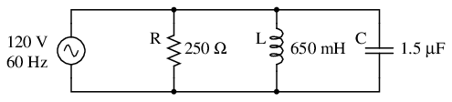
Ejemplo de circuito paralelo R, L y C.
El hecho de que estos componentes estén conectados en paralelo en lugar de en serie ahora no tiene ningún efecto sobre sus impedancias individuales. Mientras la fuente de alimentación tenga la misma frecuencia que antes, las reactancias inductiva y capacitiva no habrán cambiado en absoluto: (Figura below)
{kind=link}
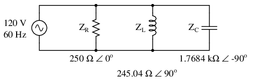
Ejemplo de circuito paralelo R, L y C con impedancias que reemplazan los valores de los componentes.
Con todos los valores de los componentes expresados como impedancias (Z), podemos configurar una tabla de análisis y proceder como en el último problema de ejemplo, excepto que esta vez seguimos las reglas de los circuitos en paralelo en lugar de en serie:
Sabiendo que el voltaje lo comparten equitativamente todos los componentes en un circuito en paralelo, podemos transferir la cifra del voltaje total a todas las columnas de componentes de la tabla:
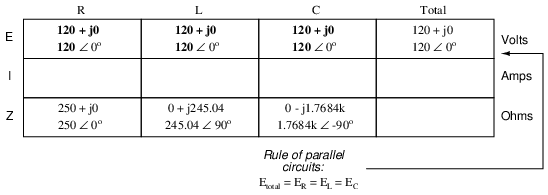
Ahora, podemos aplicar la Ley de Ohm (I=E/Z) verticalmente en cada columna para determinar la corriente a través de cada componente:
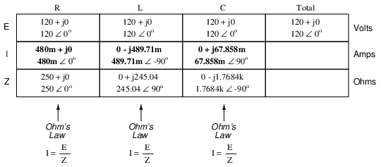
Hay dos estrategias para calcular la corriente total y la impedancia total. Primero, podríamos calcular la impedancia total a partir de todas las impedancias individuales en paralelo (ZTotal= 1/(1/ZR+ 1/ZL+ 1/ZC), y luego calcule la corriente total dividiendo el voltaje de la fuente por la impedancia total (I=E/Z). Sin embargo, resolver la ecuación de impedancia paralela con números complejos no es una tarea fácil, con todas las alternativas (1/Z). Esto es especialmente cierto si tiene la mala suerte de no tener una calculadora que maneje números complejos y se ve obligado a hacerlo todo a mano (cambie las impedancias individuales en forma polar, luego conviértalas todas a forma rectangular para sumar, luego vuelva a convertirlas a forma polar para la inversión final, luego invierta). La segunda forma de calcular la corriente total y la impedancia total es sumar todas las corrientes derivadas para llegar a la corriente total (la corriente total en un circuito paralelo, CA o CC, es igual a la suma de las corrientes derivadas), luego usar la Ley de Ohm para determinar la impedancia total a partir del voltaje total y la corriente total (Z=E/I).
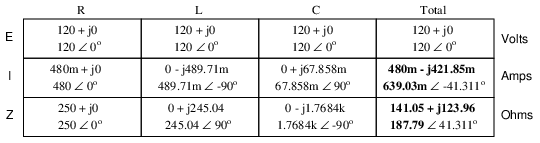
Cualquiera de los métodos, realizado correctamente, proporcionará las respuestas correctas. Intentemos analizar este circuito con SPICE y veamos qué sucede: (Figura below)
{kind=link}
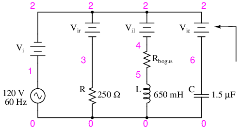
Ejemplo de circuito SPICE en paralelo R, L y C. Los símbolos de batería son fuentes de voltaje "ficticias" que SPICE utiliza como puntos de medición de corriente. Todos están configurados a 0 voltios.
ac r-l-c circuit v1 1 0 ac 120 sin vi 1 2 ac 0 vir 2 3 ac 0 vil 2 4 ac 0 rbogus 4 5 1e-12 vic 2 6 ac 0 r1 3 0 250 l1 5 0 650m c1 6 0 1.5u .ac lin 1 60 60 .print ac i(vi) i(vir) i(vil) i(vic) .print ac ip(vi) ip(vir) ip(vil) ip(vic) .end
freq i(vi) i(vir) i(vil) i(vic) 6.000E+01 6.390E-01 4.800E-01 4.897E-01 6.786E-02 freq ip(vi) ip(vir) ip(vil) ip(vic) 6.000E+01 -4.131E+01 0.000E+00 -9.000E+01 9.000E+01
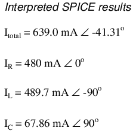
Fue necesario un poco de truco para que SPICE funcionara como nos gustaría en este circuito (instalar fuentes de voltaje "ficticias" en cada rama para obtener cifras de corriente e instalar la resistencia "ficticia" en la rama del inductor para evitar un bucle directo de inductor a fuente de voltaje, que SPICE no puede tolerar), pero obtuvimos las lecturas adecuadas. Aún más que eso, al instalar fuentes de voltaje ficticias (medidores de corriente) en las direcciones adecuadas, pudimos evitar esa idiosincrasia de SPICE de imprimir cifras actuales 180odesfasado. De esta manera, nuestras lecturas de fase actuales coincidieron exactamente con nuestros cálculos manuales.
Series-parallel R, L, and C
Ahora que hemos visto cómo el análisis de circuitos de CA en serie y paralelo no es fundamentalmente diferente del análisis de circuitos de CC, no debería sorprender que el análisis en serie-paralelo también sea el mismo, simplemente usando números complejos en lugar de escalares para representar voltaje, corriente e impedancia.
Tomemos como ejemplo este circuito en serie-paralelo: (Figura below)
{kind=link}
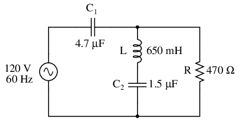
Ejemplo de circuito R, L y C en serie-paralelo.
La primera tarea, como de costumbre, es determinar los valores de impedancia (Z) para todos los componentes en función de la frecuencia de la fuente de alimentación de CA. Para hacer esto, primero debemos determinar los valores de reactancia (X) para todos los inductores y capacitores, luego convertir las cifras de reactancia (X) y resistencia (R) a la forma adecuada de impedancia (Z):
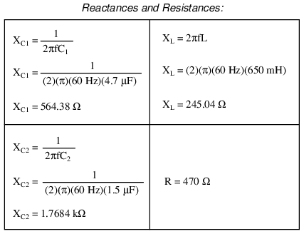
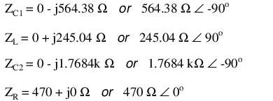
Ahora podemos configurar los valores iniciales en nuestra tabla:
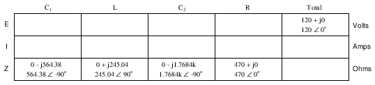
Ser una serie paralelacombinacióncircuito, debemos reducirlo a una impedancia total en más de un paso. El primer paso es combinar L y C.2como una combinación en serie de impedancias, sumando sus impedancias. Luego, esa impedancia se combinará en paralelo con la impedancia de la resistencia, para llegar a otra combinación de impedancias. Finalmente, esa cantidad se sumará a la impedancia de C1para llegar a la impedancia total.
Para que nuestra tabla pueda seguir todos estos pasos, será necesario agregarle columnas adicionales para que cada paso quede representado. Agregar más columnas horizontalmente a la tabla que se muestra arriba no sería práctico por razones de formato, por lo que colocaré una nueva fila de columnas debajo, cada columna designada por su respectiva combinación de componentes:
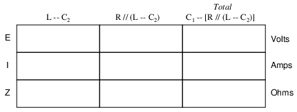
Calcular estas nuevas impedancias (combinadas) requerirá una suma compleja para combinaciones en serie y la fórmula "recíproca" para impedancias complejas en paralelo. Esta vez no se puede evitar la fórmula recíproca: ¡las cifras requeridas no se pueden obtener de otra manera!
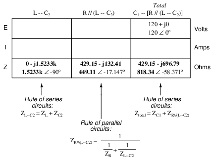
Dado que nuestra segunda tabla contiene una columna para "Total", podemos descartar con seguridad esa columna de la primera tabla. Esto nos da una tabla con cuatro columnas y otra tabla con tres columnas.
Ahora que conocemos la impedancia total (818,34 Ω ∠ -58,371o) y el voltaje total (120 voltios ∠ 0o), podemos aplicar la Ley de Ohm (I=E/Z) verticalmente en la columna “Total” para llegar a una cifra de corriente total:
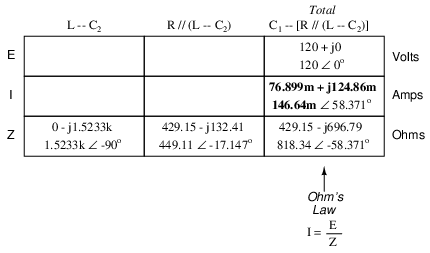
En este punto nos hacemos la pregunta: ¿hay componentes o combinaciones de componentes que comparten el voltaje total o la corriente total? En este caso, tanto C1y la combinación paralela R//(L--C2) comparten la misma corriente (total), ya que la impedancia total se compone de los dos conjuntos de impedancias en serie. Por lo tanto, podemos transferir la cifra de corriente total a ambas columnas:
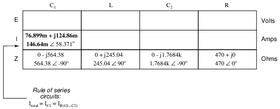
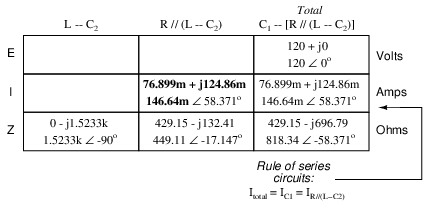
Ahora podemos calcular las caídas de voltaje en C1y la combinación serie-paralelo de R//(L--C2) usando la Ley de Ohm (E=IZ) verticalmente en esas columnas de la tabla:
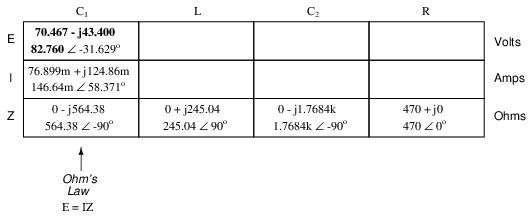
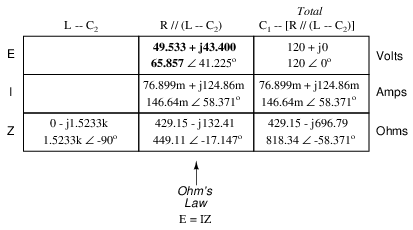
Una doble verificación rápida de nuestro trabajo en este punto sería ver si el voltaje cae o no en C1y la combinación serie-paralelo de R//(L--C2) de hecho suman el total. Según la Ley de Voltaje de Kirchhoff, ¡deberían hacerlo!
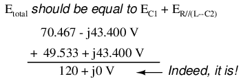
Ese último paso fue simplemente una precaución. En un problema con tantos pasos como este, hay muchas posibilidades de error. Verificaciones cruzadas ocasionales como esa pueden ahorrarle a una persona mucho trabajo y frustraciones innecesarias al identificar los problemas antes del paso final del problema.
Después de haber resuelto las caídas de voltaje en C1y la combinación R//(L--C2), volvemos a hacernos la pregunta: ¿qué otros componentes comparten el mismo voltaje o corriente? En este caso, la resistencia (R) y la combinación del inductor y el segundo condensador (L--C2) comparten el mismo voltaje, porque esos conjuntos de impedancias están en paralelo entre sí. Por lo tanto, podemos transferir la cifra de voltaje que acabamos de resolver a las columnas de R y L--C2:
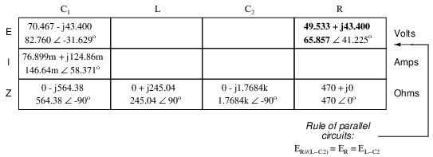
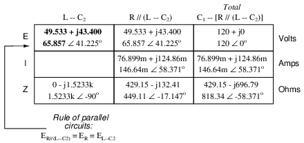
Ahora estamos listos para calcular la corriente a través de la resistencia y a través de la combinación en serie L--C2. Todo lo que tenemos que hacer es aplicar la Ley de Ohm (I=E/Z) verticalmente en ambas columnas:
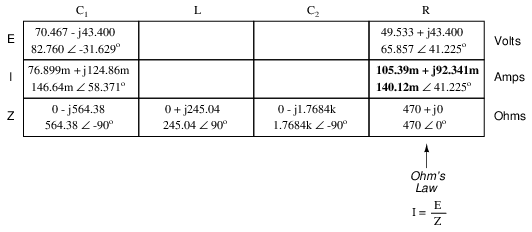
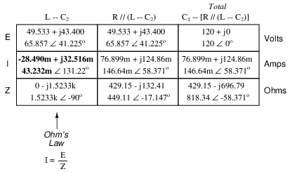
Otra verificación rápida de nuestro trabajo en este momento sería ver si las cifras actuales de L--C2y R suman la corriente total. Según la Ley Actual de Kirchhoff, deberían:
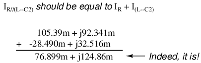
Desde la L y C2están conectados en serie, y dado que conocemos la corriente a través de su impedancia de combinación en serie, podemos distribuir esa cifra actual a L y C2columnas que siguen la regla de los circuitos en serie mediante la cual los componentes en serie comparten la misma corriente:
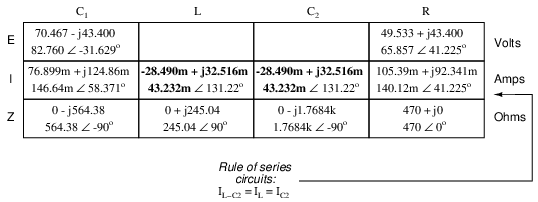
Con un último paso (en realidad, dos cálculos), podemos completar nuestra tabla de análisis de este circuito. Con impedancia y cifras de corriente establecidas para L y C2, lo único que tenemos que hacer es aplicar la Ley de Ohm (E=IZ) verticalmente en esas dos columnas para calcular las caídas de voltaje.
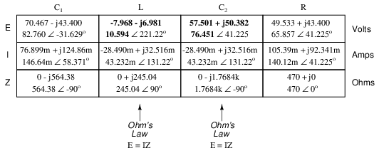
Ahora recurramos a SPICE para una verificación informática de nuestro trabajo:
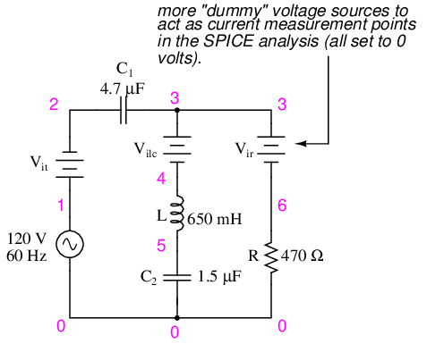
Ejemplo de circuito SPICE R, L, C en serie-paralelo.
ac series-parallel r-l-c circuit v1 1 0 ac 120 sin vit 1 2 ac 0 vilc 3 4 ac 0 vir 3 6 ac 0 c1 2 3 4.7u l 4 5 650m c2 5 0 1.5u r 6 0 470 .ac lin 1 60 60 .print ac v(2,3) vp(2,3) i(vit) ip(vit) .print ac v(4,5) vp(4,5) i(vilc) ip(vilc) .print ac v(5,0) vp(5,0) i(vilc) ip(vilc) .print ac v(6,0) vp(6,0) i(vir) ip(vir) .end
freq v(2,3) vp(2,3) i(vit) ip(vit) C1 6.000E+01 8.276E+01 -3.163E+01 1.466E-01 5.837E+01
freq v(4,5) vp(4,5) i(vilc) ip(vilc) L 6.000E+01 1.059E+01 -1.388E+02 4.323E-02 1.312E+02
freq v(5) vp(5) i(vilc) ip(vilc) C2 6.000E+01 7.645E+01 4.122E+01 4.323E-02 1.312E+02
freq v(6) vp(6) i(vir) ip(vir) R 6.000E+01 6.586E+01 4.122E+01 1.401E-01 4.122E+01
Cada línea del listado de salida de SPICE proporciona el voltaje, el ángulo de fase del voltaje, la corriente y el ángulo de fase actual para C1, L, C2y R, en ese orden. Como puede ver, estas cifras coinciden con nuestras cifras calculadas manualmente en la tabla de análisis de circuitos.
Por más desalentadora que pueda parecer una tarea como el análisis de circuitos de CA en serie-paralelo, se debe enfatizar que no hay nada realmente nuevo aquí aparte del uso de números complejos. La Ley de Ohm (en su nueva forma de E=IZ) sigue siendo válida, al igual que las Leyes de Kirchhoff del voltaje y la corriente. Si bien existe un mayor potencial de error humano al realizar los cálculos de números complejos necesarios, los principios y técnicas básicos de la reducción de circuitos en serie-paralelo son exactamente los mismos.
- REVISAR:
- El análisis de circuitos de CA en serie-paralelo es muy similar al de los circuitos de CC en serie-paralelo. La única diferencia sustancial es que todas las cifras y cálculos están en forma compleja (no escalar).
- Es importante recordar que antes de que pueda comenzar la reducción (simplificación) en serie-paralelo, debe determinar la impedancia (Z) de cada resistencia, inductor y capacitor. De esa manera, todos los valores de los componentes se expresarán en términos comunes (Z) en lugar de una combinación incompatible de resistencia (R), inductancia (L) y capacitancia (C).
Susceptance and Admittance
En el estudio de los circuitos de CC, el estudiante de electricidad se encuentra con un término que significa lo opuesto a resistencia:conductancia. Es un término útil al explorar la fórmula matemática para resistencias paralelas: Rparalelo= 1 / (1/R1+ 1/R2+ . . . 1/Rn). A diferencia de la resistencia, que disminuye a medida que se incluyen más componentes paralelos en el circuito, la conductancia simplemente aumenta. Matemáticamente, la conductancia es el recíproco de la resistencia, y cada término 1/R en la “fórmula de resistencia paralela” es en realidad una conductancia.
Mientras que el término "resistencia" denota la cantidad de oposición a los electrones que fluyen en un circuito, "conductancia" representa la facilidad con la que los electrones pueden fluir. La resistencia es la medida de cuánto mide un circuito.resistecorriente, mientras que la conductancia es la medida de cuánto fluye un circuito.conduceactual. La conductancia solía medirse en la unidad demhos, u “ohmios” escritos al revés. Ahora bien, la unidad de medida adecuada essiemens. Cuando se simboliza en una fórmula matemática, la letra adecuada para la conductancia es "G".
Los componentes reactivos, como inductores y condensadores, se oponen al flujo de electrones con respecto al tiempo, en lugar de hacerlo con una fricción constante e inmutable como lo hacen las resistencias. A esto lo llamamos oposición basada en el tiempo,resistencia reactiva, y al igual que la resistencia también la medimos en la unidad deohmios.
Como la conductancia es el complemento de la resistencia, también existe una expresión complementaria de la reactancia, llamadasusceptancia. Matemáticamente, es igual a 1/X, el recíproco de la reactancia. Al igual que la conductancia, solía medirse en la unidad mhos, pero ahora se mide en Siemens. Su símbolo matemático es “B”, lamentablemente el mismo símbolo utilizado para representar la densidad de flujo magnético.
Los términos “reactancia” y “susceptancia” tienen cierta lógica lingüística, al igual que resistencia y conductancia. Mientras que la reactancia es la medida de cuánto mide un circuito.reaccionacontra el cambio de corriente a lo largo del tiempo, la susceptancia es la medida de cuánto está un circuitosusceptiblea conducir una corriente cambiante.
Si a uno se le asignara la tarea de determinar el efecto total de varias reactancias puras conectadas en paralelo, se podría convertir cada reactancia (X) en una susceptancia (B) y luego agregar susceptancias en lugar de disminuir las reactancias: Xparalelo= 1/(1/X1+ 1/X2+ . . . 1/Xn). Al igual que las conductancias (G), las susceptancias (B) se suman en paralelo y disminuyen en serie. También como la conductancia, la susceptancia es una cantidad escalar.
Cuando los componentes resistivos y reactivos están interconectados, sus efectos combinados ya no pueden analizarse con cantidades escalares de resistencia (R) y reactancia (X). Asimismo, las figuras de conductancia (G) y susceptancia (B) son más útiles en circuitos donde los dos tipos de oposición no están mezclados, es decir, un circuito puramente resistivo (conductor) o un circuito puramente reactivo (susceptivo). Para expresar y cuantificar los efectos de componentes mixtos resistivos y reactivos, tuvimos que tener un nuevo término:impedancia, medido en ohmios y simbolizado por la letra “Z”.
Para ser coherentes, necesitamos una medida complementaria que represente el recíproco de la impedancia. El nombre de esta medida esentrada. La admitancia se mide en (¿adivina qué?) la unidad de Siemens y su símbolo es "Y". Al igual que la impedancia, la admitancia es una cantidad compleja más que escalar. Nuevamente, vemos cierta lógica en la denominación de este nuevo término: si bien la impedancia es una medida de cuánta corriente alterna esimpedidoEn un circuito, la admitancia es una medida de cuánta corriente hay.aceptado.
Con una calculadora científica capaz de manejar aritmética de números complejos tanto en forma polar como rectangular, es posible que nunca tengas que trabajar con figuras de susceptancia (B) o admitancia (Y). Sea consciente, sin embargo, de su existencia y de sus significados.
Summary
Con la notable excepción de los cálculos de potencia (P), todos los cálculos de circuitos de CA se basan en los mismos principios generales que los cálculos de los circuitos de CC. La única diferencia significativa es el hecho de que los cálculos de CA utilizan cantidades complejas, mientras que los cálculos de CC utilizan cantidades escalares. La ley de Ohm, las leyes de Kirchhoff e incluso los teoremas de redes aprendidos en CC siguen siendo válidos para CA cuando el voltaje, la corriente y la impedancia se expresan con números complejos. Las mismas estrategias de resolución de problemas aplicadas a los circuitos de CC también se aplican a los de CA, aunque ciertamente puede ser más difícil trabajar con CA debido a los ángulos de fase que no están registrados por un multímetro portátil.
El poder es otro tema completamente diferente y se tratará en su propio capítulo de este libro. Debido a que la potencia en un circuito reactivo se absorbe y se libera, no solo se disipa como ocurre con las resistencias, su manejo matemático requiere una aplicación más directa de la trigonometría para resolverlo.
Cuando se enfrenta al análisis de un circuito de CA, el primer paso del análisis es convertir todos los valores de los componentes de resistencia, inductor y condensador en impedancias (Z), según la frecuencia de la fuente de alimentación. Después de eso, proceda con los mismos pasos y estrategias aprendidas para analizar circuitos de CC, utilizando la “nueva” forma de la Ley de Ohm: E=IZ; I=E/Z; y Z=E/I
Recuerde que sólo las cifras calculadas expresadas enpolarEsta forma se aplica directamente a mediciones empíricas de voltaje y corriente. La notación rectangular es simplemente una herramienta útil para sumar y restar cantidades complejas. La notación polar, donde la magnitud (longitud del vector) se relaciona directamente con la magnitud del voltaje o corriente medida, y el ángulo se relaciona directamente con el cambio de fase en grados, es la forma más práctica de expresar cantidades complejas para el análisis de circuitos.
Contributors
Los contribuyentes a este capítulo se enumeran en orden cronológico de sus contribuciones, desde el más reciente hasta el primero. Consulte el Apéndice 2 (Lista de colaboradores) para fechas e información de contacto.
Jason Stark(Junio de 2000): Formato de documentos HTML, que dio lugar a una segunda edición mucho más atractiva.
Lecciones en circuitos eléctricoscopyright (C) 2000-2023 Tony R. Kuphaldt, según los términos y condiciones delCC BY License.